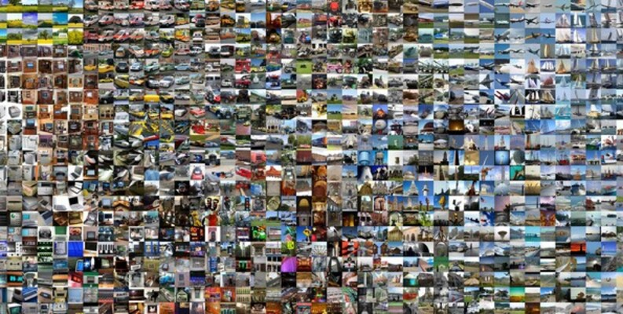
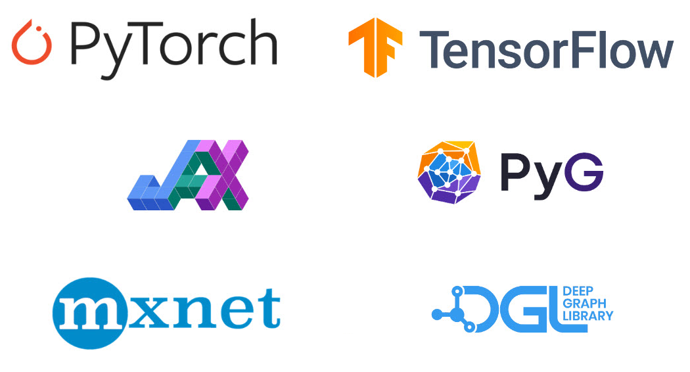
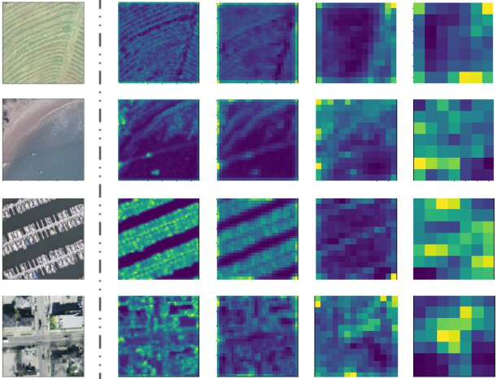
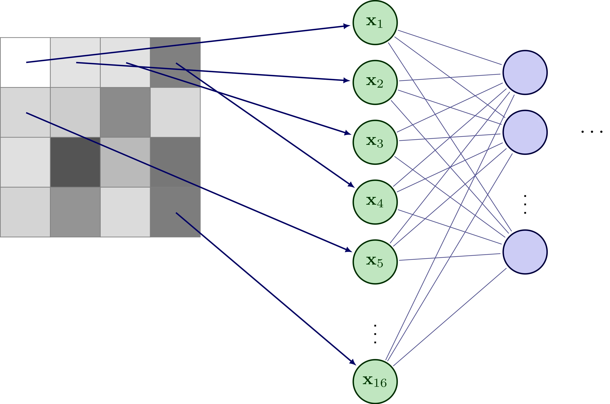
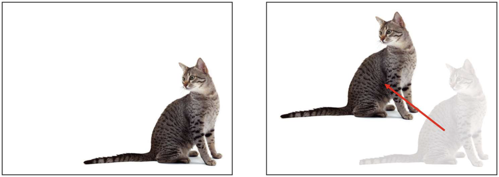

Introduction au fonctionnement de l'intelligence artificielle
L'intelligence artificielle pour les sciences et l'ingénierie
Les succès récents de l'intelligence artificielle
Analyse et reconnaissance d'images

Les succès récents de l'intelligence artificielle
Analyse et reconnaissance d'images
Les succès récents de l'intelligence artificielle
Génération et manipulation d'images et de vidéos
Les succès récents de l'intelligence artificielle
Génération et manipulation d'images et de vidéos
Les succès récents de l'intelligence artificielle
Traitement automatique du language naturel (NLP)
- 2017: apparition des "Transformer"
- 2020: GPT-3
- 2022: ChatGPT
- 2023: modèles multimodaux
- Depuis 2024:
Les succès récents de l'intelligence artificielle
IA agentique
6 niveaux d'autonomie pour les véhicules:
- pas d'assistance
- assistance au conducteur
- conduite partiellement automatisée
- conduite conditionnellement automatisée
- conduite hautement automatisée, dans certaines conditions
- autonomie complète, dans n'importe quelles conditions
Pas de véhicules niveau 5 à ce jour. Tesla en est au niveau 2. Les taxis Waymo sont au niveau 4.
Les succès récents de l'intelligence artificielle
IA agentique
L'IA d'aujourd'hui ≈ machine learning
Apprentissage automatique (machine learning)
Rendre une machine capable d'effectuer des tâches complexes sans avoir été explicitement programmée pour le faire, mais en se basant sur l'expérience, c'est-à-dire en utilisant des données exemples.
L'IA d'aujourd'hui ≈ machine learning
Apprentissage automatique (machine learning)
Rendre une machine capable d'effectuer des tâches complexes sans avoir été explicitement programmée pour le faire, mais en se basant sur l'expérience, c'est-à-dire en utilisant des données exemples.
L'IA d'aujourd'hui ≈ machine learning
Apprentissage automatique (machine learning)
Rendre une machine capable d'effectuer des tâches complexes sans avoir été explicitement programmée pour le faire, mais en se basant sur l'expérience, c'est-à-dire en utilisant des données exemples.

Les données, c'est la vie!
- L'apprentissage automatique est basé sur des données exemples
- Une donnée est un vecteur de $d$ valeurs (caractéristiques ou descripteurs) $$ \mathbf{x} = (x_1, x_2, \ldots, x_d), \quad \mathbf{x} \in \mathcal{X} \subset \mathbb{R}^d $$
- Les données sont associées à une variable cible $y$ que l'on veut prédire
- $y \in \mathbb{R}$ (régression) ou $y \in \{c_1, c_2, \ldots, c_K\}$ (classification)
| sepal length | sepal width | petal length | petal width | iris species | |
|---|---|---|---|---|---|
| 0 | 5.1 | 3.5 | 1.4 | 0.2 | setosa |
| 1 | 4.9 | 3.0 | 1.4 | 0.2 | setosa |
| 2 | 4.7 | 3.2 | 1.3 | 0.2 | versicolor |
| 3 | 4.6 | 3.1 | 1.5 | 0.2 | virginica |
| 4 | 5.0 | 3.6 | 1.4 | 0.2 | virginica |
Apprentissage supervisé
- L'apprentissage consiste à trouver un modèle $h$ tel que $h(\mathbf{x}) = \hat{y}$, où $\hat{y}$ est la prédiction de $y$ pour $\mathbf{x}$
- Pour cela, on s'appuie sur un ensemble de $n$ données d'apprentissage $$ \mathcal{D} = \{(\mathbf{x}_1, y_1), (\mathbf{x}_2, y_2), \ldots, (\mathbf{x}_n, y_n)\} $$ où $y_i$ est la "vraie" valeur de $y$ pour $\mathbf{x}_i$
Apprentissage supervisé
Exemple "jouet"
- On décide que $h$ est un polynôme de degré $p$
- On dispose des points en bleu pour l'apprentissage (légérement bruités)
- Quel est le meilleur modèle?
Méthodes d'apprentissage
70 ans de recherche = multitude de méthodes issues:
- des statistiques
- de l'optimisation mathématique
- de la théorie de l'information
- du traitement du signal
- de la théorie des jeux
- ...


Méthodes d'apprentissage
Parmi ces méthodes, il y a les réseaux de neurones
- Dans les années 1950, inspiration du fonctionnement des neurones biologiques
- Modèle: $h(\mathbf{x}) = \sigma(w_1 x_1 + w_2 x_2 + \ldots + w_d x_d + b) = \sigma(\mathbf{w}^\top \mathbf{x} + b)$
- Les paramètres $w_i$ sont déterminés (appris) à partir des données d'apprentissage
Méthodes d'apprentissage
Parmi ces méthodes, il y a les réseaux de neurones
- Réseau de neurones = assemblage de plusieurs (beaucoup) neurones
- Au fil des années, des réseaux de plus en plus profonds $\rightarrow$ deep learning

L'IA d'aujourd'hui ≈ deep learning
- Plus il y a de neurones, plus il y a de paramètres à apprendre...
- ... et plus il faut de données pour l'entraînement
- ... et plus l'entraînement est coûteux (en temps et en argent)
- ... et plus le modèle est puissant
Par exemple, GPT-4 (la v4 du modèle de ChatGPT):
- Environ 1000 milliards de paramètres
- Entraîné sur 10 To de textes
- 34 jours d'entraînement (355 années/GPU)
- Environ 5M$ pour l'entraînement
Notes: ce sont des estimations car OpenAI ne publie plus ces informations depuis la version 3
L'IA d'aujourd'hui ≈ deep learning
Les réseaux de neurones existent depuis 1950 - Pourquoi ça ne fonctionne que depuis 2010?
Abondance des données

Dispositifs de calculs plus puissant (GPU)
Développement de logiciels dédiés

Apprentissage de représentation

Apprentissage de représentation
Exemple pour les images

- Beaucoup trop de paramètres
- Image RGB $1024 \times 1024 \approx 3.145M$ de valeurs en entrée
- Une couche de $1000$ neurones $\rightarrow 3145M$ de paramètres
- ... et ce n'est qu'une petite image et un réseau d'une seule couche
- Information spatiale déconstruite
- Information niveau pixel
- Pas de notion de voisinage, de forme, de texture
- Sensible aux moindres modifications (e.g. translation)

Apprentissage de représentation
Exemple pour les images
- Apprentissage de représentation = transformer l'image en vecteur de valeurs
- Ces valeurs doivent traduire au mieux ce que représente l'image
- Les techniques utilisées sont spécifiques aux types de données
Apprentissage de représentation
Illustration
L'IA pour les sciences

- Succès majeures de l'IA: applications numériques
- Images, vidéos, textes, jeux vidéos, etc.
- Données massivement disponibles
- Quid des applications en sciences et ingénierie? Peut-on utiliser l'IA pour:
- remplacer avantageusement les approches traditionnelles?
- résoudre les problèmes plus efficacement?
- accélérer la découverte scientifique?
L'IA pour les sciences
Difficultés principales
- Demande beaucoup de données
- Peu interprétable
- Limité en généralisation
Contradictoire avec la démarche scientifique:
- S'appuie sur la théorie et les expériences
- Doit être interprétable et explicable
- Doit permettre des prédictions fiables sur de nouveaux cas
Solution
L'IA pour les sciences
- Sujet de recherche TRÈS actif en IA depuis ∼2020
- Objectif: concevoir de nouvelles méthodes d'IA dédiées aux problèmes scientifiques et d'ingénierie
L'IA pour les sciences
Pour quoi faire?
- À la base de nombreuses théories scientifiques, il y a les Équations aux Dérivées Partielles (EDP)
- Dérivée partielle d'une fonction $u(x_1, \ldots, x_n) : \mathbb{R}^n \to \mathbb{R}$: $$ \frac{\partial u}{\partial x_i} = \lim_{\Delta x_i \to 0} \frac{u(x_1, \ldots, x_i + \Delta x_i, \ldots, x_n) - u(x_1, \ldots, x_i, \ldots, x_n)}{\Delta x_i} $$ soit l'ampleur de variation de $u$ par rapport à un petit changement de $x_i$
- Équations aux Dérivées Partielles: $$ F\left(x_1, \ldots, x_n, u, \frac{\partial u}{\partial x_1}, \ldots, \frac{\partial u}{\partial x_n}, \frac{\partial^2 u}{\partial x_1^2}, \frac{\partial^2 u}{\partial x_1 \partial x_2}, \ldots \right) = 0 $$
- Pour modéliser des phénomènes physique (mécanique, électromagnétisme, acoustique, thermodynamique), chimiques (cinétique des réactions), ou biologiques (dynamique des populations)
L'IA pour les sciences
Pour quoi faire?
- Comprendre et résoudre ces équations est crucial pour de nombreuses applications scientifiques et industrielles: simulation aérodynamique, prévisions météorologiques, modélisation biologique, etc.
- Approches traditionnelles: méthodes numériques, coûteuses en temps et en calculs et parfois complexes


L'IA pour les sciences
Pour quoi c'est dur?
- Pour entraîner un réseaux de neurones à résoudre une EDP, il faut beaucoup de données!
- Quelles données? des simulations numériques, des mesures expérimentales, des observations réelles
- Obtenir ces données est très coûteux en temps et en ressources, parfois difficiles, voire impossibles
Exemple en mécanique des fluides numérique (Navier-Stokes):
- Besoin de simulations précises et longues
- Plusieurs jours de calculs par simulation
- Besoin de milliers de simulations pour couvrir tous les cas possibles


Droite: simulation obtenue par un réseau de neurones entrainé sur ce type de simulations
L'IA pour les sciences
Pour quoi c'est dur?
- Résolutions multiples pour une même EDP: conditions initiales, conditions aux limites, paramètres
- Difficile de prédire au delà des conditions/paramètres non vues lors de l'entraînement

L'IA pour les sciences
Comment faire?
L'IA pour les sciences
Comment faire? par exemple...
- Physics-informed neural networks (PINNs)
- Un réseau de neurones entraîné pour approximer la solution d'une EDP
- Apprend les données aux limites + apprend à respecter l'EDP

L'IA pour les sciences
Comment faire? par exemple...
- Fourier Neural Operator (FNO)
- Apprendre l'opérateur $F$ de l'EDP plutôt que la solution $u$
- $\kappa$ est une fonction que l'on peut apprendre, par exemple avec une transformée de Fourier

Exemples d'applications récentes
Prévision météorologique
- GraphCast de Google DeepMind (2023)
- Données:
- Grille 0.25° latitude/longitude ≈ 1M points
- Surface, atmosphère, pression (227 desc.)
- 39 années de relevés météo (ECMWF)

Exemples d'applications récentes
Carte d'activation cardiaque
- Fibrillation auriculaire : le cœur bat trop lentement, trop rapidement ou de manière irrégulière
- Diagnostic avec une carte d'activation électro-anatomiques (activité électrique du coeur)
- Seulement quelques mesures pour produire toute l'activité $\rightarrow$ interpolation non-trivial
- PINN pour la génération de carte d'activation cardiaque complète à partir de quelques mesures

Exemples d'applications récentes
Production d'énergie par fusion nucléaire
- Fusion nucléaire = fusion de deux atomes pour produire de l'énergie
- Énergie performante, propre et quasi inépuisable (combustible naturel, rendement élevé)
- Expérimental, car très compliqué à maîtriser à cause de l'état instable du plasma utilisé pour la fusion
- IA pour modéliser et contrôler le plasma dans les réacteurs à fusion
Exemples d'applications récentes
Prédiction de la structure des protéines
- Les cellules vivantes sont constituées de protéines, qui participent aux fonctions essentielles de la vie
- Une protéine est une chaîne d'acides aminés, déterminée par le code génétique (ADN)
- Cette chaîne se replie en une structure 3D spécifique, à la faveur des intéractions chimiques
- Comprendre, prédire et maîtriser ce repliement est un enjeu majeur en biologie et en médecine
Exemples d'applications récentes
Prédiction de la structure des protéines
- AlphaFold 2 de Google DeepMind (2021)
- Entraîné sur 200k+ structures déjà connues
- Prédictions pour presque toutes les protéines connues (∼ 200M)
- Principes d'IA inspirés des LLM et avec une génération itérative
En (très) résumé...
- IA pour les sciences: le nouveau graal de la communauté scientifique
- Objectif: combiner les connaissances scientifiques et l'apprentissage profond
- Déjà beaucoup d'approches prometteuses (PINN et FNO ne sont que deux exemples)
- Encore beaucoup de problèmes ouverts: interprétabilité, généralisation (on y est pas encore), problème inverse (découvrir des lois de la physique à l'aide de l'IA)
- Énormement de potentiel pour faire progresser les sciences et l'ingénierie
- Une ingrédient clé pour les World Models*?...